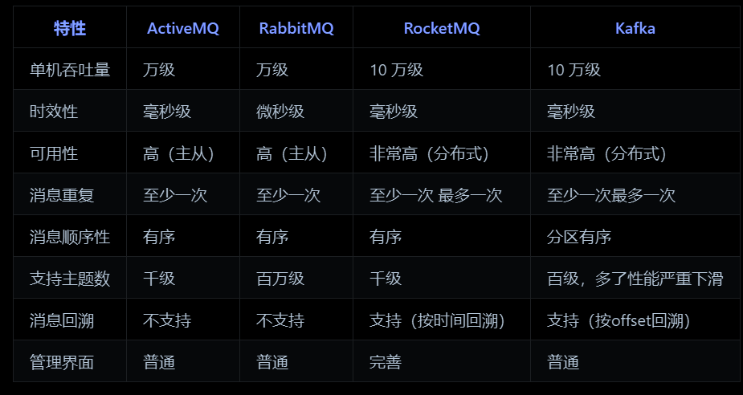

消息队列八股
7. 消息队列
- 消息队列是一个使用队列来通信的组件。它的本质，就是个转发器，包含发消息、存消息、消费消息的过程。
- 
- 消息队列使用的场景
- 解耦：在多个系统之间进行解耦，将原本通过网络之间的调用的方式改为使用MQ进行消息的异步通讯，这样项目之间不会存在耦合，系统之间不会产生太大的影响
- 异步：把不需要同步的操作放入MQ，可加快系统的访问速度，提供更好的客户体验
- 削峰：如果流量太大导致系统、数据库可能会崩溃，可以使用MQ进行流量削峰，将用户的大量消息直接放到MQ里面，然后我们的系统去按自己的最大消费能力去消费这些消息，可以保证系统的稳定
- 防止消息重复消费的方法：业务端自己做控制，对于已经消费成功的消息，本地数据库表或Redis缓存业务标识，每次处理前先进行校验，保证幂等。
- 保证幂等性
- 唯一标识（幂等键）：客户端为每个请求生成全局唯一ID（如 UUID、业务主键），服务端校验该ID是否已处理，适用场景接口调用、消息消费等。
- 数据库事务 + 乐观锁：通过版本号或状态字段控制并发更新，确保多次更新等同于单次操作
- 数据库唯一约束：利用数据库唯一索引防止重复数据写入，适用场景数据插入场景（如订单创建）
- 分布式锁：通过锁机制保证同一时刻仅有一个请求执行关键操作
- 消息去重：消息队列生产者为每条消息生成唯一的消息 ID，消费者在处理消息前，先检查该消息 ID是否已经处理过，如果已经处理过则丢弃该消息
- 消息队列处理阶段

- 消息生产阶段：从消息被生产出来，然后提交给 MQ 的过程中，只要能正常收到 （ MQ 中间件）的 ack 确认响应，就表示发送成功，返回异常则进行消息重发。
- 消息存储阶段：Kafka 在使用时是部署一个集群，生产者在发布消息时，队列中间件通常会写「多个节点」，也就是有多个副本，其中一个节点挂了不会影响整个系统
- 消息消费阶段：消费者接收消息+消息处理之后，才回复 ack 。消息队列只有收到确认后，才会将消息从队列中移除。
- 消息积压解决方案：优化处理逻辑，批量处理消息；考虑水平扩容，增加Topic的队列数和消费组机器的数量
- 事务消息
- Kafka的优缺点
- 优点：Kafka的最大优势就在于它的高吞吐量、高并发，在普通机器4CPU8G的配置下，一台机器可以抗住十几万的QPS。Kafka支持集群部署，如果部分机器宕机不可用，则不影响Kafka的正常使用。kafka集群支持热扩展，可扩展性好。Kafka中消息被持久化到本地磁盘，保证可靠性。
- 缺点：Kafka有可能会造成数据丢失，因为它在收到消息的时候，并不是直接写到物理磁盘的，而是先写入到磁盘缓冲区里面的。Kafka功能比较单一，主要就是支持收发消息，高级功能基本没有，就会造成适用场景受限。
- RocketMQ优缺点
- 优点：支持功能比较多，比如延迟队列、消息事务等等，吞吐量也高，单机吞吐量达到 10 万级，支持大规模集群部署，线性扩展方便，Java语言开发，满足了国内绝大部分公司技术栈
- 缺点：性能相比 kafka 弱一点，因为 kafka 用到了 sendfile 的零拷贝技术，而 RocketMQ 主要是用 mmap+write 来实现零拷贝。
- 如何实现消息顺序读取
- RocketMQ采用了局部顺序一致性的机制，实现了单个队列中的消息严格有序。也就是说，如果想要保证顺序消费，必须将一组消息发送到同一个队列中，然后再由消费者进行注意消费
- 要在 Kafka 中保证顺序读取消息，需要结合生产者、消费者的配置以及合适的业务处理逻辑来实现。
- 生产者端确保消息顺序：为了保证消息写入同一分区从而确保顺序性，生产者需要将消息发送到指定分区
- 消费者端保证顺序消费：消费者在消费消息时，需要单线程消费同一分区的消息，这样才能保证按顺序处理消息
- Kafka快的原因
- 顺序写入优化：Kafka将消息顺序写入磁盘，减少了磁盘的寻道时间。
- 批量处理技术：Kafka支持批量发送消息，这意味着生产者在发送消息时可以等待直到有足够的数据积累到一定量，然后再发送。
- 零拷贝技术：Kafka使用零拷贝技术，可以直接将数据从磁盘发送到网络套接字，避免了在用户空间和内核空间之间的多次数据拷贝。
- 压缩技术：Kafka支持对消息进行压缩，这不仅减少了网络传输的数据量，还提高了整体的吞吐量
- 消费模型
- 推送模型：基于推送模型（push）的消息系统，由消息代理记录消费者的消费状态。消息代理在将消息推送到消费者后，标记这条消息已经消费，但这种方式无法很好地保证消费被处理。push模式很难适应消费速率不同的消费者
- 拉取模型：由消费者自己记录消费状态，每个消费者互相独立地顺序拉取每个分区的消息。这种由消费者控制偏移量的优点是：消费者可以按照任意的顺序消费消息。

- kafka 消费者是以consumer group消费者组的方式工作，由一个或者多个消费者组成一个组，共同消费一个topic。每个分区在同一时间只能由group中的一个消费者读取，但是多个group可以同时消费这个partition。
- Kafka消息积压解决方案：增加消费者实例可以提高消息的消费速度，从而缓解积压问题。增加 Kafka 主题的分区数量可以提高消息的并行处理能力。
- Broker 模式是一种用于处理分布式系统中的消息传递的架构模式。 它的核心思想是通过一个中介层 (Broker) 来协调消息的发送和接收，从而解耦消息生产者 (Producer) 和消费者 (Consumer)。
- Kafka消息确认机制
- ACK=0：这是最不可靠的模式。生产者在发送消息后不会等待来自服务器的确认
- ACK=1：这是默认模式，也是一种折衷方式。在这种模式下，生产者会在消息发送后等待来自分区领导者（leader）的确认，但不会等待所有副本（replicas）的确认。
- ACK=-1：这是最可靠的模式。在这种模式下，生产者会在消息发送后等待所有副本的确认。
- RocketMQ 提供了三种消息发送方式：同步发送（等待响应后才发下一条）、异步发送（不等待，通过回调接口处理响应）和单向发送（只发送请求不等待应答）

消息队列八股
https://frosty-xue.github.io/2025/05/14/消息队列八股/